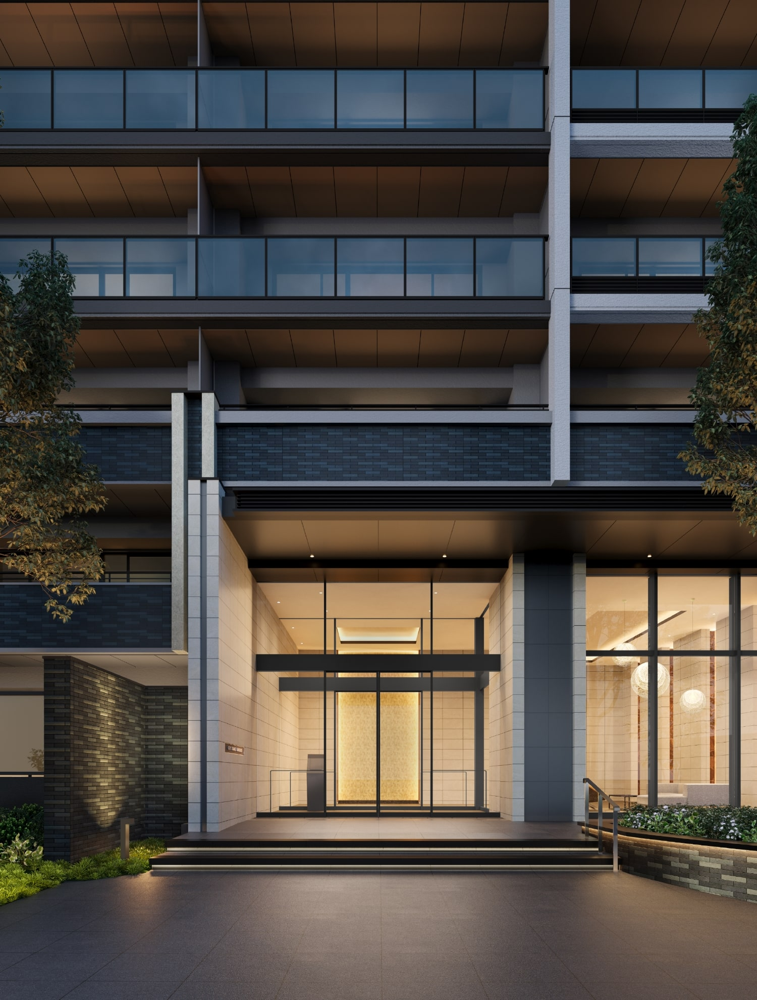
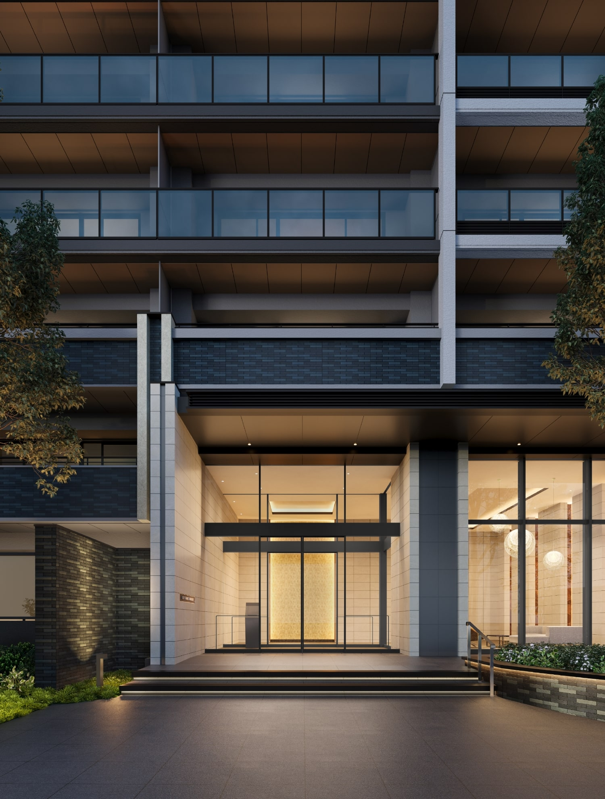

エントランス完成予想図
ENTRANCE
優美な光が織りなす、
気品のエントランス。
帰り着く人を迎え、訪れたゲストをもてなす
アイストップウォールの輝き。
端正なアプローチから邸内へと誘うやわらかな光が、
重厚で気品に満ちたエントランスを演出します。

エントランスホール完成予想図
COMMON SPACE
住まう人やゲストをもてなす、
寛ぎの空間。
ガラスウォールが映す煌めきと、?級感のある
折り上げ天井が印象的なエントランスホール。
落ち着いた空間が住まう人やゲストをもてなします。

エントランスホール完成予想図
LANDSCAPE
街の潤いと、庭の樹々に包まれるランドスケープ。
6,200㎡超の敷地に、シンボルツリーのナナミノキのほか、多くの樹々が住棟を包み込む緑豊かなランドスケープ。また、安全性に配慮した歩車分離設計を採用。多様な働き方に対応するテレワークラウンジも設け、さらなる暮らしの快適と利便を叶えました。
敷地概念イラスト
-
1 歩行者の安全に配慮した歩車分離設計
歩行者と車の敷地内への出入口を分けて安全性に配慮し、双方に快適な歩車分離設計を採用しました。
2 24時間ゴミ出し可能なゴミ置場
建物内に24時間いつでもゴミ出しができるゴミ置場を設置。ゴミを溜めることなく、衛生的で快適な室内を保つことができます。
※粗大ゴミは除きます。3 外出時に便利な宅配ボックス
留守中に届いた荷物を、24時間いつでも受け取ることができます。
-
4 多様な働き方をサポートするテレワークラウンジ
さまざまな働き方に対応する居住者専用のテレワークラウンジを設置しました。

image photo
-
PLANTING
シンボルツリーのナナミノキのほか、敷地全体を囲うように、ヒラドツツジやクスノキなどを配植。低木と高木を組み合わせた植栽が四季折々の表情をつくります。
-
image photo
ナナミノキ
-
image photo
ヒラドツツジ
-
image photo
クスノキ
※掲載のエントランス・エントランスホール完成予想図は計画段階の図面を基に描き起こしたもので、実際とは多少異なります。また、形状の細部および設備機器等については省略しております。
※外構・植栽計画、家具・調度品等の形状・色等は今後変更される場合がありますので、あらかじめご了承ください。
※敷地内の樹木等はある程度生育した後をイメージして描いたものです。また、葉や花の色合い、樹形等はイメージであり実際とは異なります。
※掲載の敷地概念イラストは計画段階の図面を基に描き起こしたもので、形状・色等は実際とは多少異なります。また、一部敷地外の道路等を合わせて着彩しています。
※植栽参考写真は、イメージで実際とは異なります。
※本物件の南側約110m先に、事業主:塩田建設株式会社による地上5階建の「（仮称）川崎登戸新町マンション新築工事」が建設中です（2024年3月下旬竣工予定）。この建物が竣工しますと今回分譲する南側の住戸の眺望、通風等に影響が生じる場合がありますので、あらかじめご承知ください。
※本物件の北西側約40m?120m先の地点に、他社が複数の新築住宅を建設する計画があります。 当該新築住宅が建設されますと、南西側の住戸の眺望、通風等に影響を及ぼしますので予めご承知ください。また、整備工事ならびに工事車輌の通行などにより、騒音・振動・粉塵等が生じる場合があります。
※本物件隣接部には、エースライズ株式会社の事務所があり、入居後において本物件の住環境（車両交通量・騒音等）に影響が生じる場合があります。また、車輌の通行などにより、騒音・振動・粉塵等が生じる場合があります。
※本物件東側隣接部には、小田急バス登戸営業所があり、入居後において本物件の住環境（車両交通量・騒音等）に影響が生じる場合があります。また、バス車輌の通行などにより、騒音・振動・粉塵等が生じる場合があります。
※本物件北側隣接部には、マクセル株式会社の工場があり、入居後において本物件の住環境（臭気・騒音等）に影響が生じる場合があります。また、整備工事ならびに工事車輌の通行などにより、騒音・振動・粉塵等が生じる場合があります。